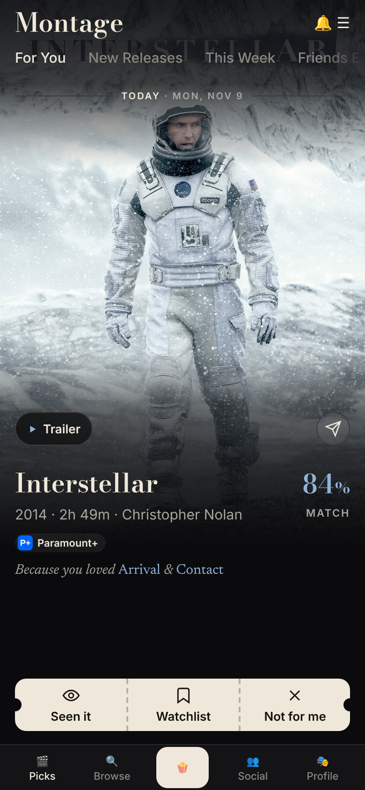
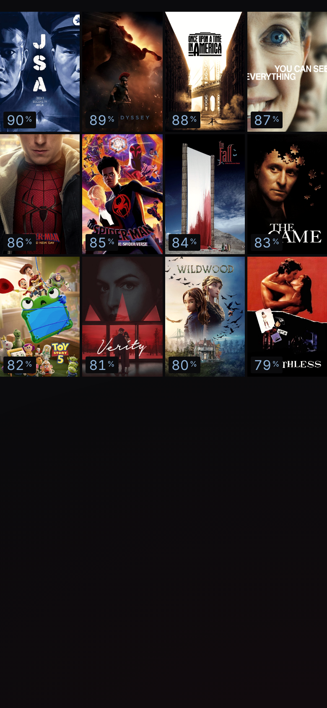
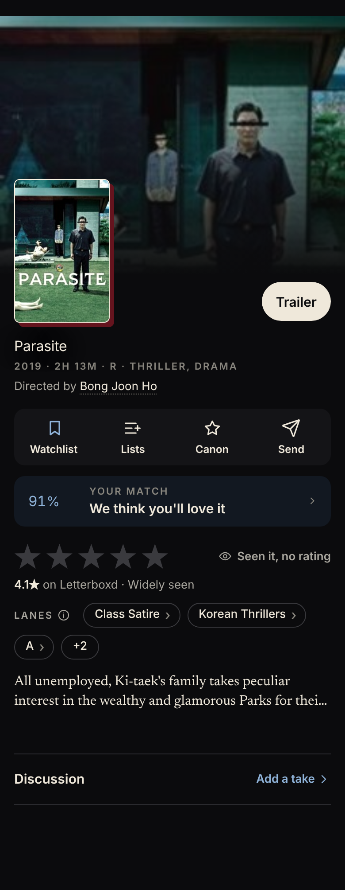
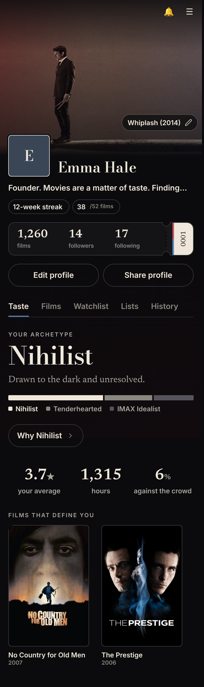
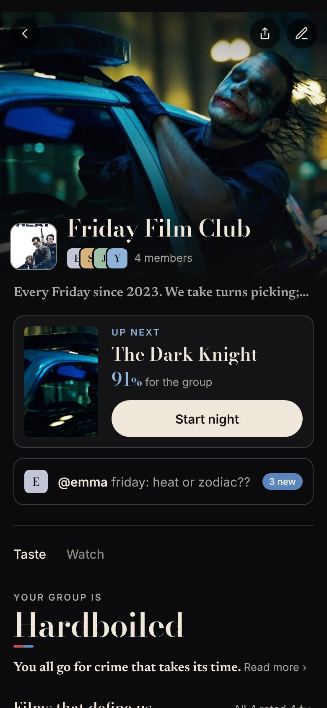
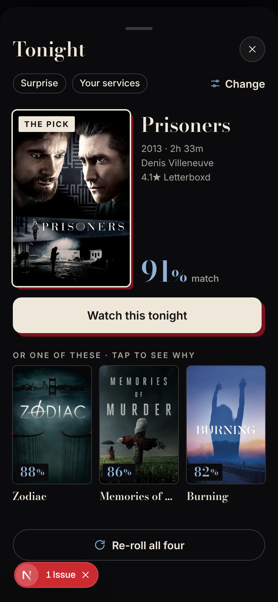
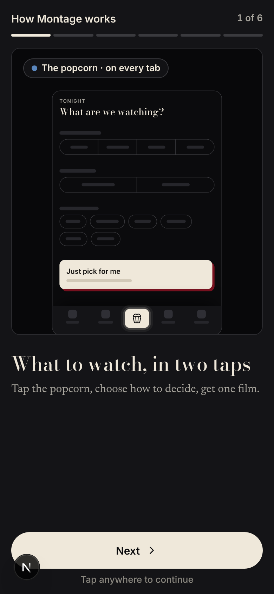
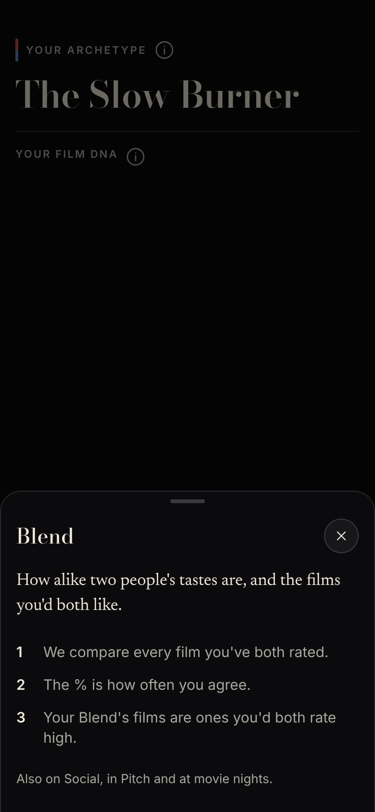
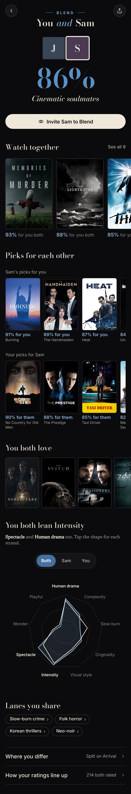

PicksFull-bleed poster, % and one why-line. The rest is a tap away.
BrowseBigger posters, 3 across, no titles under Popular.
Film pageTitle, one meta line, lane chips, four labelled actions.
ProfileBackdrop, archetype name and Film DNA picture first; paragraphs behind a tap.
GroupsBigger images, long paragraphs collapse; tap to expand.
TonightFour posters, one highlighted, tap to swap. No list of reasons.
How Montage worksCards with a picture each, one line of words.
ⓘ tipsTerms explained one tap away instead of on screen.
BlendWatch together first; the Film DNA detail lower down.